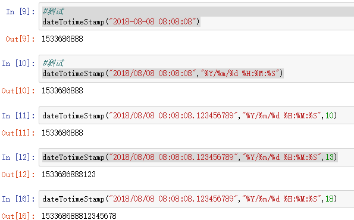

1 def dateTotimeStamp(date,format_string="%Y-%m-%d %H:%M:%S",digits=10):
2 '''
3 时间字符串转时间戳，默认10位，时间串默认格式为"%Y-%m-%d %H:%M:%S"
4 '''
5 import time
6 try:
7 date_1 = date[:19]
8 date_2 = date[20:20+digits-10]
9 time_array = time.strptime(date_1,format_string)
10 time_stamp = int(time.mktime(time_array))
11 if digits == 10:
12 return time_stamp
13 else:
14 time_stamp = int(time_stamp*(10 ** (digits-10)))
15 time_stamp = time_stamp+int(date_2)
16 return time_stamp
17 except Exception as e:
18 print(e)测试：
